Example of an immersive 3D UI
Quake 3 Web (js)
Mouse Look - Cursor Lock
Mouse Selection - State Switch from Cursor Lock
WASD Keyboard Navigation
Keyboard Interaction – State Changes
3D Mouse Orbit Examples
Mouse rotates around Selected object
Camera Pivot is at Objects Pivot
From the perspective of the camera
Also known as "Fishbowl" view
Typical of VR applications and First Person Games
Mouse/Camera Raycast Select
Mouse or Camera view Raycast Selection of 3D object in 3D VE from 2D Screen
Animations can be triggered by Object Selection, resulting in an Exploded view of all objects
Objects selected from MouseLook - Triggers Camera Waypoint Animation to Selected Object
Mouse Orbit around Selected Object, or switch to Fishbowl for an overall view and selecting another Waypoint jump
Lowest level of selection frames and plays media
3DUI Interaction Practical examples - extras
Interactive 2D CV
Narrative controlled by Mouse or Keyboard – Camera timeline
2D Diorama/Game Level
Collisions/timeline trigger animations
Web Links
Could be 3D with camera controls, object selection
Exploded view
Exploded View – Car (Advanced)
Diorama Fragments
What is Virtual Reality?
https://medium.com/@blaurel/what-is-virtual-reality-77b876d829ba
These are somewhat synonymous, though the VE may not be as fully featured.
Virtual Reality is used indiscriminately and may not be accurate in all cases (360 video is sometimes incorrectly described as VR)
Virtual Reality is usually fully immersive
AR – Augmented Reality involves enhancing a real world feed with virtual objects calibrated to the coordinate space.
On the Mixed Reality Scale, this can slide towards Augmented Virtuality – BBC Virtual News sets with real presenters
UI Design
HCI Studied
Perception
Cognition
Human Factors
Graphic Design
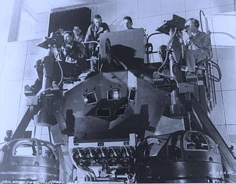
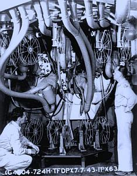
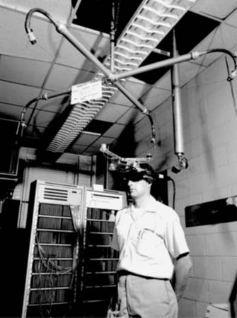
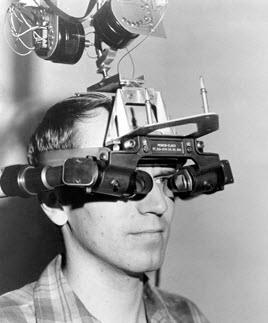
Tracking and Mocap
Computer vision
Haptics
HMDs – Stereoscopy, FOV, FOR, Resolution and Refresh rate improved
Web Browsers – VRML
Games – PC Graphics cards and GPUs drove development
Commercial and Military flight simulators
Augmented Reality from 2000 onwards
Mobile processor development
Smart Phone/ Tablet development - GPS, WiFi, Touch Controls, Front and Back mounted cameras, high speed processors
Arcade VR
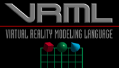
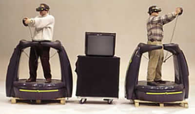
Commercial VR
Spatial Games Controllers
Wii
Sony eyeToy
Kinect
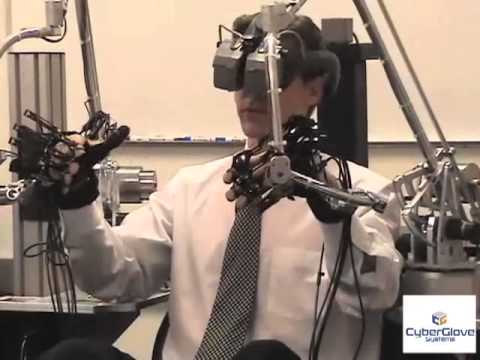
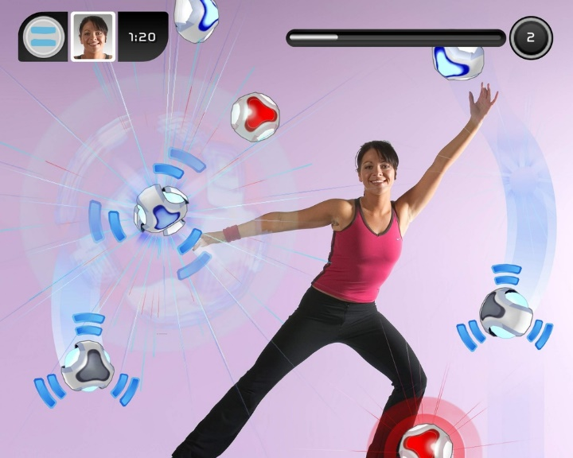
Tablets
Mobiles
Desktops
3D and Haptics inputs
Integrated HMD
HoloLens, Google cardboard, Oculus Rift, Vive
Some Spatial games controllers
Vive, Oculus Touch
Cave
Hybrid
Mouse
Keyboard
Keyboards
Chording Keyboards
Virtual (Tablet) Keyboards
Custom hardware
3D Motion Tracking – Input Devices
Razer Hydra – facebook VR
Haptic Pen - Botox
Magnetic sensors
3D Mouse - 3D Spacemouse – 6dof, no tracking
3D Motion Capture – Full Body or Part Body
Waldo
Gloves
Synertial
Cyberglove
Haptic Body Device
Cyber grasp
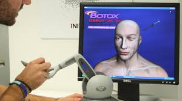
3D Sensors – Magnetic, Inertial, Accelerometer, GPS
Sensor Data
3dof – Orientation or Position only
6dof – Position and Orientation
Continuous Data or Discrete
Typical Uses
Head Tracker for POV, Parallax views, Fishtank VR, HMDs
Hands, Feet – Vtime Virtual Treadmill
Vive Paintbrush
Monitor – Mono and Stereo
Head Mounted Display – tracked head, stereo
Projected – Mono/Stereo, Cave
Retinal
Volumetric
Mobile Device – Smart Phone or Tablet, Can be used as a virtual window, and HMD in mono/stereo (Google Cardboard, Samsung GearVR), or a mobile “desktop”
Mobile CPU/GPU
Broadband connectivity
Input and Output in same screen
Input
Virtual Keyboard
Touch Input
Accelerometer
GPS
Output
Direct 3D Interaction through 2d Screen
Virtual Window for AR
Can augment further 3DUI – Virtual Menus
Output DeviceCan introduce third coordinate space to consider, along with VE and Input device
Range of Coordinate Spaces
(3D VE, 2D Display, Inputs)
Range of Viewpoints
Range of Software
Range of Input Devices
Range of Platforms
https://www.vs.inf.ethz.ch/edu/FS2013/DS/reports/AlexanderCebulla_ProjectionBasedAugmentedReality_report.pdf
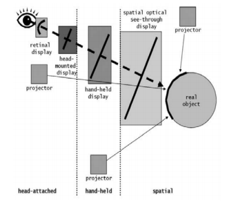
Issues with Extra Dimension
3DUI needs Simultaneous Operations
The new Dimension brings freedom of movement
Coordinate Space Alignment
Scale, Registration
Input<>VE<>Output
Especially Problematic in AR
VE has Virtual Camera
Input has Real World POV + Scale
Output is varied and usually 2D
Tablet//Phone has In/Out Plane the same
2D into 3DVE
To be continued!
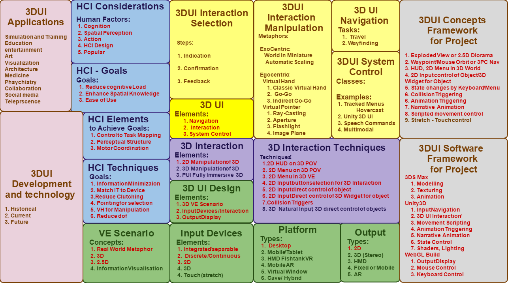
Navigation
Travel
Point of View - POV
Interaction
Selection
Manipulation
System Control
States
Modes of Interaction
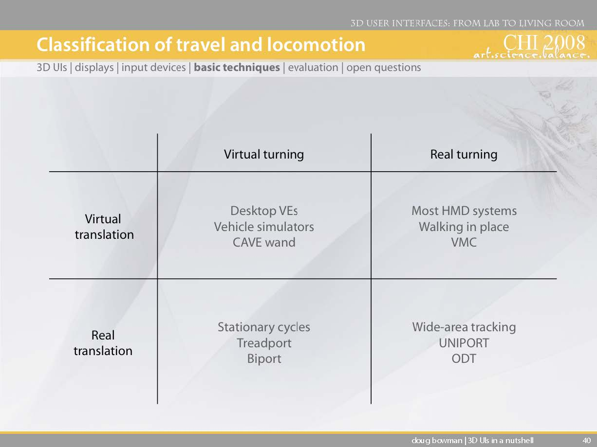
Navigation
The most common VE task, and is actually composed of two tasks.
Travel is the motor component of navigation, and just refers to the physical movement from place to place.
Wayfinding is the cognitive or decision making component of navigation, and ask the questions “Where am I”, ”Where do I want to go”, ”How do I get there”…
Navigation
Travel
Point of View – POV
WASD
Pointing – Travel and gaze in different directions
Arrows
Mouse Look/orbit
Clutching, Waypoints, Grabbing and Pulling
Paired with Locomotion devices – Vtime Treadmill
Low cognitive load
Target based to object
Steering for search
Provide multiple techniques for multiple tasks
Use graceful transitions
Separate gaze from travel – permanent or switchable
Quake WebGL
//media.tojicode.com/q3bsp/
Reverie – lazynav
https://youtu.be/hL5mQcCFU9I
Vtime Treadmill
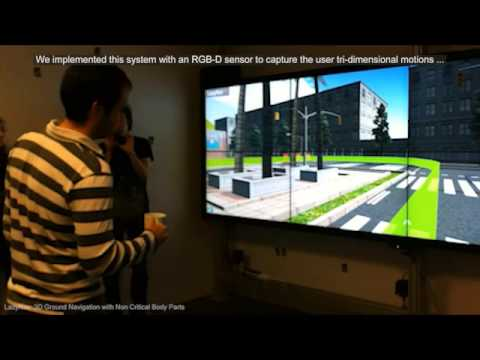
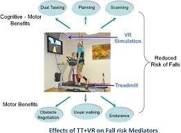
Interaction
Selection
Simply the specification of an object or
set of objects for some purpose.
Manipulation
Refers to the specification of object properties (most often position and orientation, but also other attributes). Selection and Manipulation are often used together, but selection may be a stand-alone task. For example, the user may select an object in order to apply a command such as delete to the obj.
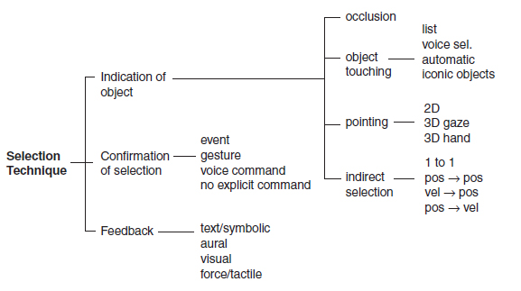
Raycasting/Occlusion
Go-Go arm extension
Object is Selected by collision, made child of mapped VH, then released.
Natural one-to-one mapping between Physical and Virtual hands.
Kinect is a good example of use.
Direct Mapping and touching of objects.
Can only select objects within Physical hand reach.
Razer VR +
Facebook VR
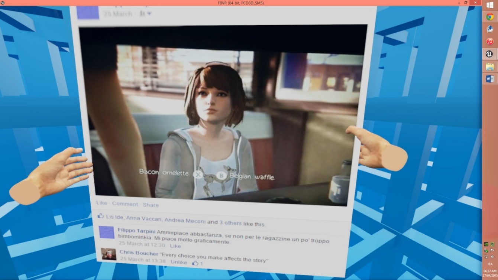
Virtual Hand or Mouse Laser Pointer
Laser pointer attached to Physical hand
Ray is cast into the 3D VE from 3D input or 2D Plane (Screen)
First object intersected is selected
Made by only 2 dof (pitch and yaw)
Efficient - Mouse or touch
Limitation of 3rd dof works well for remote selection
Also cone casting and snap to object rays
High performance
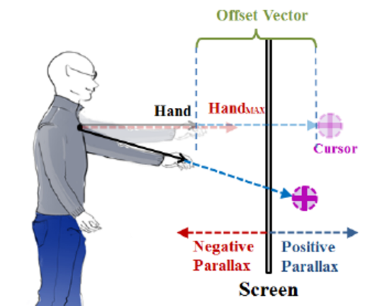
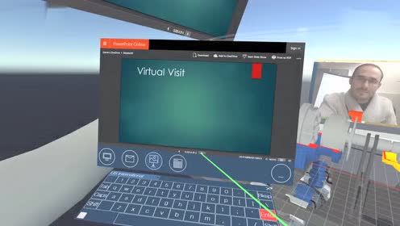
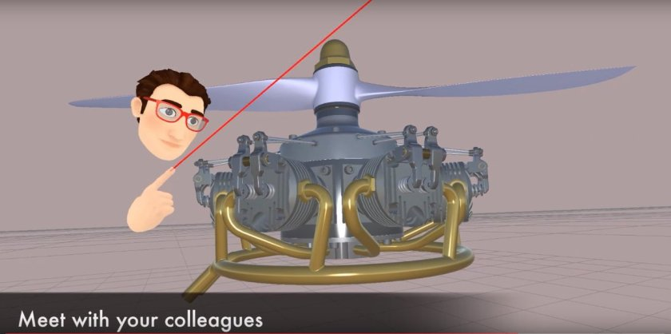
Works in image plane (tablet, mobile)
Covers it to select – ray from eye to nearest object through finger
Sticky finger, head crusher, palm lifter
http://www.cs.cmu.edu/~stage3/publications/97/conferences/3DSymposium/HeadCrusher/
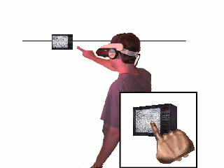
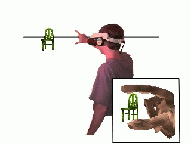
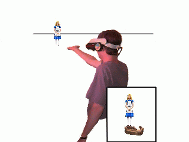
Virtual Hand
Non one-to-one mapping
Requires 3dof
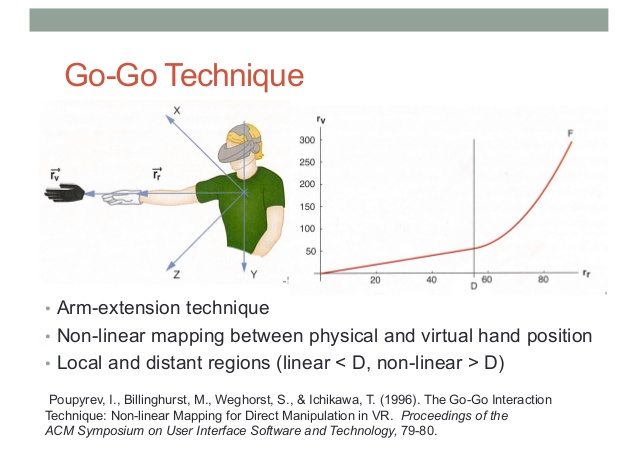
Cone casting
Snapping
3D Bubble cursor
Multimodal – Eye Tracking and Speech select
https://repository.royalholloway.ac.uk/file/c4d1a84d-d4d4-a856-b25a-331dd40dedbe/8/Murtagh-Eye_movements_and_voice.pdf
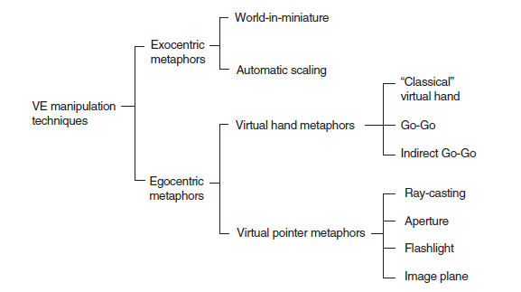
World In Miniature – Dollhouse manipulated in hand
Automatic Scaling – Selection scales objects to user
Ego Centric Metaphors
Virtual Hand Metaphors
Classic Virtual Hand – Isomorphic, Direct Mapping
Go-Go – VH but nonilinear mapping
Indirect Go-Go – Raycasting
Virtual Pointer Metaphors
Ray-Casting, Occlusion – Laser Pointer, Finger Cover
Aperture - Peephole
Flashlight – Cone Selection
Image Plane
hand object manipulation extending raycasting - Linear
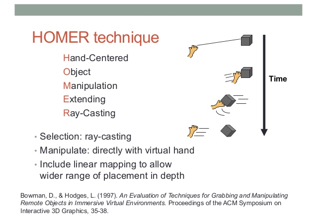
Moves VH to Object to manipulate – Non-Linear
(ray casting) Like Waypoint and Mouse orbit, but for object rather than camera
Used with Occlusion selection – Image Plane
Scaled to directly adjust like Virtual Hand
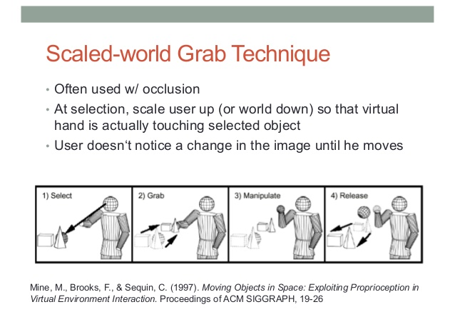
WIM – World In Miniature – dollhouse or game map
Map that has effect on VE
Manipulate items and navigation in small area.
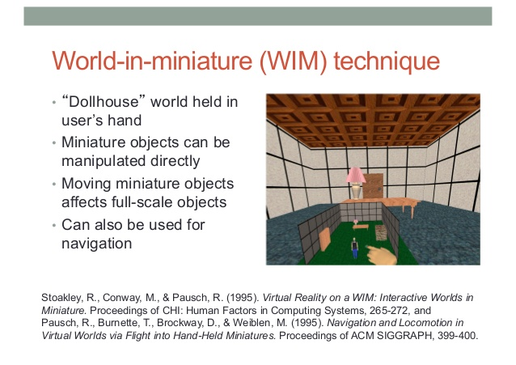
Reduce Clutching
Use Pointing Techniques for Selection
Best Control to task Cognitive Map
Use Virtual Hand Techniques for Manipulation – (extra)
Best Control to task Cognitive Map
Reduce dof if Possible
Clamp extra dimension to 2.5D or Orthographic
Limit free movement in extra dimension
2D Interface controls for 3D Manipulation - Button or Slider
3D Widget – direct object manipulation tools
State Buttons or sliders – Time(Narrative), Materials
https://www.youtube.com/watch?v=n1g9QaKe7rU
https://www.youtube.com/watch?v=_FvWtFyeNss&list=PLL0Qt-QS9kmTNhmYOMOvy0XMyvzdAdFnX
2D HUD on 3D POV
2D Menu on 3D POV
2D Menu within 3D VE
2D mouse selection of button for 3D Interaction
2D mouse direct control of object
2D mouse direct control of 3D Gimbal/Widget for object
3D Natural Input and 3D direct control of objects
2D Joystick Widget
https://www.youtube.com/watch?v=nGYObojmkO4
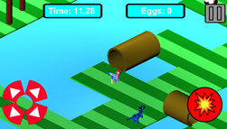
Multimodal Example – Historical - 1980
Put That There
https://www.youtube.com/watch?v=sC5Zg0fU2e8
System Control
The task of Changing the System State or Mode of Interaction.
This is usually done with some type of command to the system
2D
Menus
Command Line
Can Involve selection, manipulation, etc. ..
…but best to consider it separately
Virtual Menus –Unity3D UI
Tool Selectors – metaphors
Speech Commands (Multimodal)
Pen and Tablet
For CW
Just need Selection technique
Use good Visual Feedback
Use menus, tabs, buttons, widgets and other systems for higher marks
Let the ideas drive the interaction
Unity 3D UI
https://www.youtube.com/watch?v=QxRAIjXdfFU
Essentially similar to Immerse
https://www.youtube.com/watch?v=gwYjnWCcw18
Don’t Disturb Flow of Action
Use Correct Spatial Reference
Allow for Multimodal
Structure Functions
Give Good Feedback
Any Issues?
Start to think about Unity UI
https://www.youtube.com/watch?v=JrlFMwLI1fw
https://unity3d.com/learn/tutorials/topics/user-interface-ui
https://blogs.unity3d.com/2014/06/30/unity-4-6-new-ui-world-space-canvas/